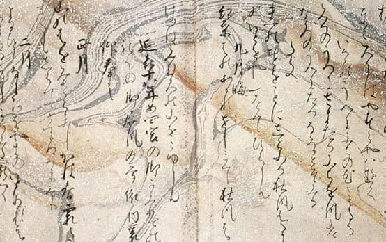
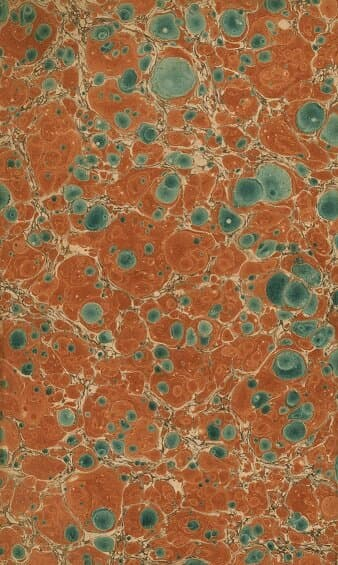
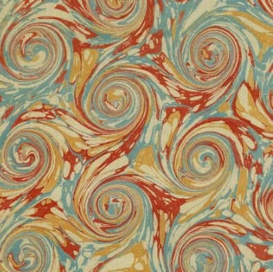
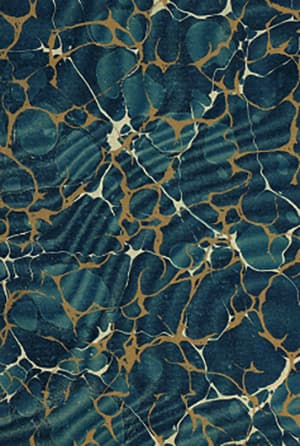
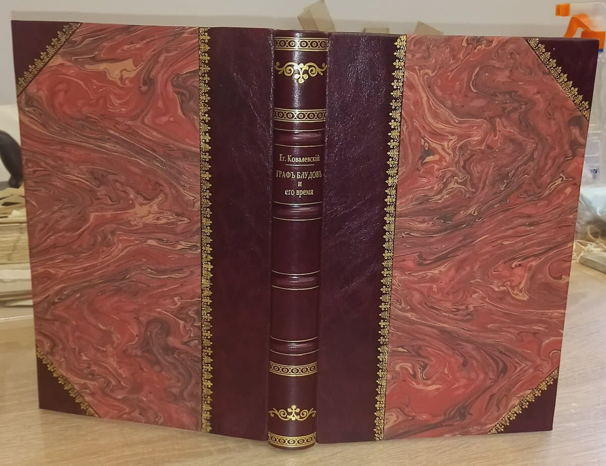
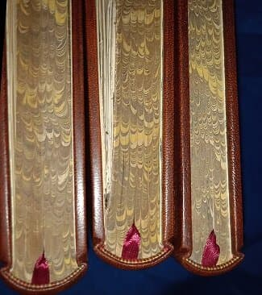
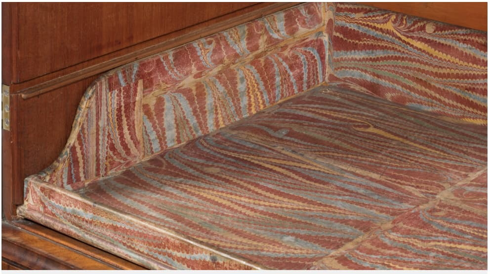
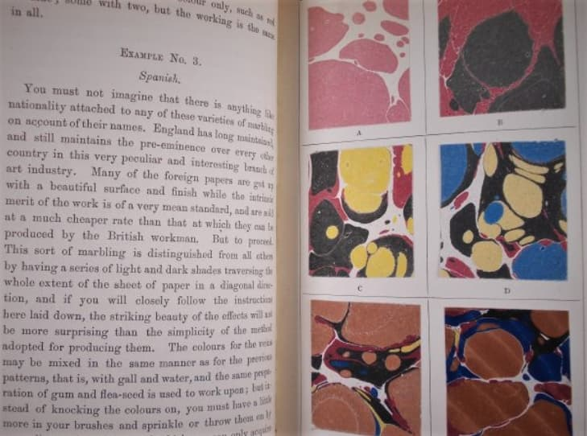

Мраморная бумага. Кто же был первым изобретателем?

Мраморная бумага. Кто же был первым изобретателем ?
Что такое «мраморная бумага»? Если просто - это рисунок на воде. Краску капают на специальный раствор, где она растекается на поверхности. Затем добавляют второй цвет, этот цвет прерывает форму первоначальной краски, как бы раздвигая её, создавая узор в виде прожилок из исходного цвета.
Некоторые считают, что родоначальником «мраморной бумагам» была Турция.
Но задолго до Турции мраморная бумага существовала в Японии. И было это в 11- 12-ом веке. Метод, известный как "Суминагаси" или "Суминагаши", что переводится «плавающие чернила», или «плавающая тушь», включает в себя чернила суми, сделанные из животных клеев, древесной смолы, масел, комбинация которых позволяет чернилам плавать на воде. Мастер капал на воду чернила, а потом аккуратно раздувал краситель по поверхности, и получался очень воздушный, полупрозрачный, обволакивающий рисунок. Бумагу медленно клали на поверхность воды и переносили рисунок на бумагу.

И только 300 -лет спустя аналогичный процесс появляется в Турции, известный как Эбру. Вместо чернил использовали краску, а так как вещество это более тяжелое и не держалось на воде, нужно было разработать состав, который удерживал краситель на поверхности. Был создан специальный загуститель. Использование загустителя принесло практическую пользу — теперь краски могли плавать достаточно долго, чтобы художник мог манипулировать узором, и именно так у переплетчиков появились замысловатые узоры, которые мы видим в редких книгах. В турецком мраморе также использовали квасцы - для того чтобы рисунок хорошо прилипал к бумаге.
Новые узоры и цвета появлялись на протяжении всей истории мраморной бумаги с поразительной регулярностью. Многие из них давно имеют свои названия . Например: «Французский завиток» «Турецкий мрамор» или по- другому «Турецкие камешки» ,«Испанская волна». Это общее название разных волнообразных рисунков . Он может быть совершенно разного вида, ровно таким, каким его сделает мастер. Говорят, что волнообразный рисунок сделан испанским помощником по мрамированию, который с похмелья попытался поднять «турецкий мрамор –камешки» трясущимися руками, в результате чего получилась волна. В интернете можно найти много статей по названиям и рисункам мраморной бумаги.



В 16-19 веке искусство мрамирования бумаги изменило внешний вид книги. Сначала мрамор использовали только на форзацы, затем стали использовать на крышках переплета и стали мрамировать обрезы книг .


Мраморную бумагу использовали не только для переплетов. Она активно использовалась для шкатулок, всевозможных коробов. И даже для оклейки мебели.

До середины 19-го столетия искусство мрамирования бумаги было элитарным и очень недешевым . Секреты изготовления хранились в тайне и передавались только своим подмастерьям, которые так же должны были держать их в секрете.
Но в 1853 году один из мастеров мрамирования бумаги англичанин Чарльз.У. Волноу опубликовал книгу «Искусство мраморирования бумаги» ,раскрывая многовековые секреты мрамирования. Чарльз .У.Волноу вызвал гнев гильдии мастеров – мраморщиков, так как он раскрыл их секреты. Они, даже, называли его предателем.

А вскоре вышла другая книга другого мастера Джеймса Самнера «Раскрытая тайна: демонстрация того, как каждый переплетчик может стать мраморщиком»
А в 1894 году в Америке вышла книга написанная Джозефом Халфером «Прогресс мраморного искусства » Но его уже не корили, а наоборот хвалили, что он раскрыл недостающую информацию о мрамировании.
К концу 19-го века увеличение механизации изменило способ производства книг: более дешевые книги в тканевом переплете с небольшим декором стали стандартом, а к началу двадцатого века бумага использовалась только в переплетных мастерских, которые сохраняли ручной труд. В 20-м веке в нашей стране ,это искусство фактически умерло. Но сегодня уже не редко встречается классная бумага, сделанная российскими мастерами.